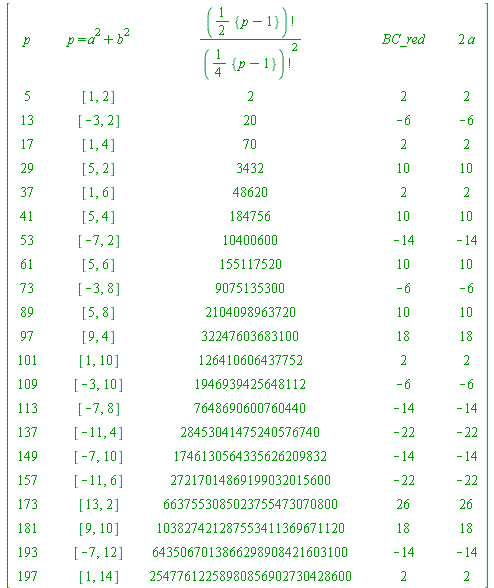

Gauss' binomial coefficient congruence, and its extension ("suggested by Beukers"), proved by Chowla-Dwork-Evans
Gauss' binomial coefficient congruence theorem. For every prime  (mod 4) we have:
(mod 4) we have:
(mod  )
)
where '' is chosen according to the modified Fermat two-square theorem above.
Remark #1. The object on the left-hand side is clearly a binomial coefficient.
Remark #2. Gauss gave (and proved) this remarkable result in his 1828 paper as a result of studying the question:
For primes  , how many solutions does the congruence have?
, how many solutions does the congruence have?
Remark #3. I recommend my Monthly paper with Karl Dilcher (paper number 4 at http://johnbcosgrave.com/publications.php) for an alternative way of viewing (I mean by way of discovery) Gauss' theorem.
| > | L := []:
for p from 5 by 4 to 200 do if isprime(p) then L := [op(L), p] fi od: for p in L do a||p := a_sign(p); ### see the Procedures section b||p := sqrt(p - a_sign(p)^2); BC||p := ((p-1)/2)!/((p-1)/4)!^2: od: print(``); print(array([ [ 'p', ``, ``, 'p = a^2 + b^2', ``, '({p-1}/2)!/({p-1}/4)!^2', ``, ``, 'BC_red', ``, ``, '2*a'], seq( [ p, ``, ``, [a||p, b||p], ``, BC||p, ``, ``, mods(BC||p, p), ``, ``, 2*a||p ], p = L ) ] ) ): print(``); lprint(`The 2nd last column is the least absolute residue of the central column,`); print(``); lprint(`while the final column is the least absolute residue of 2 times the signed a.`); |
|  | |
| `The 2nd last column is the least absolute residue of the central column,` | |
| `while the final column is the least absolute residue of 2 times the signed a.` |
| > |
The Chowla-Dwork-Evans Theorem (1986). For every prime  (mod 4) we have:
(mod 4) we have:
(mod  )
)
where is the (already encountered) base-2 Fermat quotient.